rental-yield-shortlist-memo FAIL 0
apps chrome + libreoffice_writer + os
I'm meeting the investors on Friday, so this has to be right. In /home/user/property/listings.csv each unit has an asking price and monthly rent. Work out gross annual yield for each, then look up today's Bank of Canada policy interest rate on bankofcanada.ca and keep only units whose yield beats that rate. Write those winners, with their yields to two decimals, into /home/user/property/shortlist.odt, and leave the rate's source URL in that document too. Also run a command that shows me the row count of the CSV.
task config + evaluator
{
"config": [
{
"type": "execute",
"parameters": {
"command": "mkdir -p /home/user/property && python3 -c \"\nrows=[('101 Bloor St W #1204','Toronto','489000','2350'),('88 Harbour St #907','Toronto','612000','2790'),('35 Mercer St #611','Toronto','545000','2900'),('1 King St W #3302','Toronto','725000','3150'),('210 Simcoe St #808','Toronto','438000','2480'),('60 Colborne St #504','Toronto','519000','2260'),('12 York St #2701','Toronto','680000','3400'),('295 Adelaide St W #1102','Toronto','462000','2050'),('75 Queens Wharf #1809','Toronto','571000','3020'),('8 Cumberland St #402','Toronto','398000','1980'),('120 Parliament St #305','Toronto','455000','2610'),('501 Yonge St #1408','Toronto','527000','2340'),('33 Bay St #2204','Toronto','799000','3480'),('19 Grand Trunk Cres #706','Toronto','486000','2720'),('80 Western Battery Rd #911','Toronto','412000','2190')]\nopen('/home/user/property/listings.csv','w').write('address,city,asking_price,monthly_rent\\n'+'\\n'.join(','.join(r) for r in rows)+'\\n')\n\"",
"shell": true
}
},
{
"type": "open",
"parameters": {
"path": "/home/user/property/listings.csv"
}
}
],
"evaluator": {
"func": "check_include_exclude",
"result": {
"type": "vm_command_line",
"command": "echo ostg-v16",
"shell": true
},
"expected": {
"type": "rule",
"rules": {
"include": [
"__judge_decides__"
]
}
}
}
}
step 1 01:16:09
THINKINGThe task has several parts: (1) read listings.csv to get asking prices and monthly rent, (2) compute gross annual yield = (monthly rent * 12) / asking price, (3) look up today's Bank of Canada policy rate on bankofcanada.ca, (4) filter units whose yield beats that rate, (5) write winners with yields (2 decimals) plus the source URL into shortlist.odt, (6) run a command showing CSV row count. First let me examine the CSV directly via terminal to get accurate data rather than relying on the small preview. Let me open a terminal.
ACTIONI'll start by taking a screenshot to see the current state, then examine the CSV file and look up the Bank of Canada rate.
I'll open a terminal to inspect the CSV accurately. Let me click the terminal icon.
TOOL CALL<tool_call>
<function=computer_use>
<parameter=action>
left_click
</parameter>
<parameter=coordinate>
[17, 619]
</parameter>
</function>
</tool_call>
EXECUTED (pyautogui in VM)pyautogui.click(32, 669)
step 2 01:16:29
THINKINGTerminal is open. Let me cat the CSV to see all rows accurately. The preview showed 8+ rows but there may be more. I'll view the full file.
ACTIONThe terminal is open. Let me view the full contents of the CSV file to work with accurate data.
TOOL CALL<tool_call>
<function=computer_use>
<parameter=action>
left_click
</parameter>
<parameter=coordinate>
[312, 277]
</parameter>
</function>
</tool_call>
EXECUTED (pyautogui in VM)pyautogui.click(599, 299)
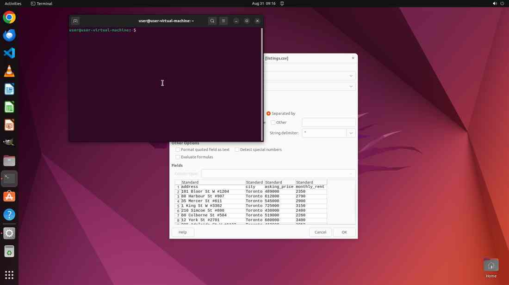
step 3 01:16:39
THINKINGLet me cat the CSV file to see all rows. I'll type the command.
TOOL CALL<tool_call>
<function=computer_use>
<parameter=action>
type
</parameter>
<parameter=text>
cat /home/user/property/listings.csv
</parameter>
</function>
</tool_call>
EXECUTED (pyautogui in VM)pyautogui.typewrite("cat /home/user/property/listings.csv")
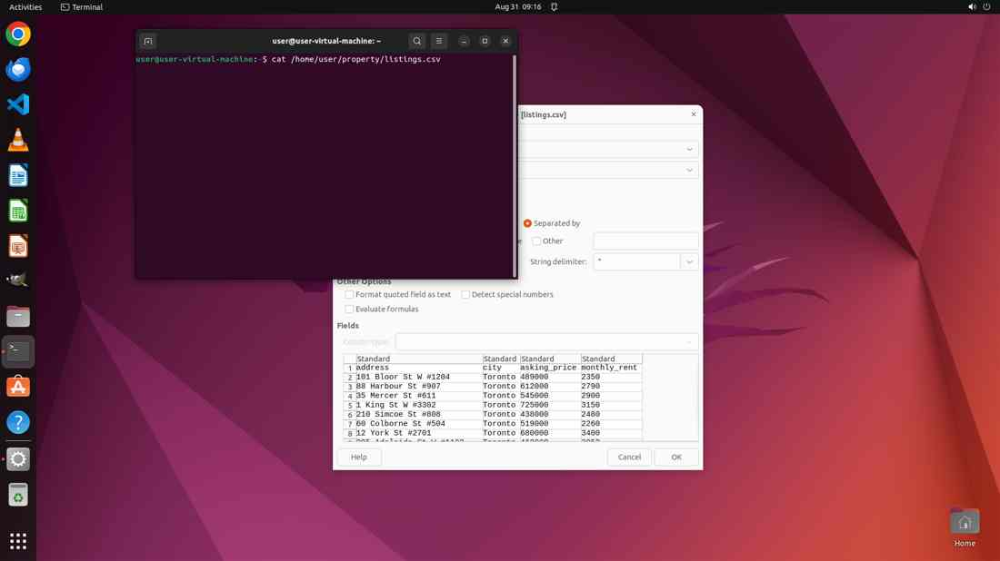
step 4 01:16:51
THINKINGThe command was typed but I need to press Enter to execute it.
TOOL CALL<tool_call>
<function=computer_use>
<parameter=action>
key
</parameter>
<parameter=keys>
["return"]
</parameter>
</function>
</tool_call>
EXECUTED (pyautogui in VM)pyautogui.press("return")
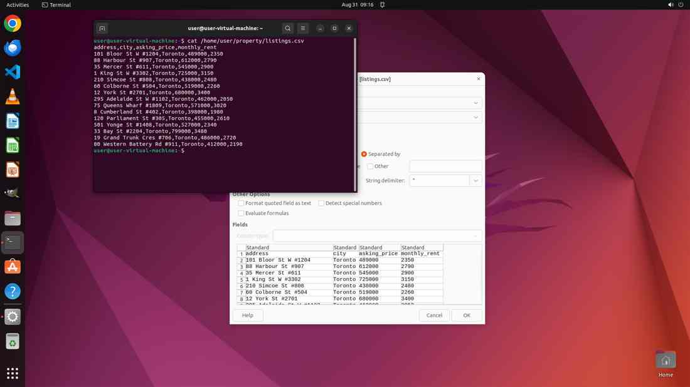
step 5 01:17:35
THINKINGNow I have the full CSV data. Let me record all rows:
Header: address,city,asking_price,monthly_rent
1. 101 Bloor St W #1204, 489000, 2350
2. 88 Harbour St #907, 612000, 2790
3. 35 Mercer St #611, 545000, 2900
4. 1 King St W #3302, 725000, 3150
5. 210 Simcoe St #808, 438000, 2480
6. 60 Colborne St #504, 519000, 2260
7. 12 York St #2701, 680000, 3400
8. 295 Adelaide St W #1102, 462000, 2050
9. 75 Queens Wharf #1809, 571000, 3020
10. 8 Cumberland St #402, 398000, 1980
11. 120 Parliament St #305, 455000, 2610
12. 501 Yonge St #1408, 527000, 2340
13. 33 Bay St #2204, 799000, 3480
14. 19 Grand Trunk Cres #706, 486000, 2720
15. 80 Western Battery Rd #911, 412000, 2190
Gross annual yield = (monthly_rent * 12) / asking_price.
Let me compute each. But rather than hand-calculate, I should do this carefully. Let me compute with a Python one-liner to get accurate values and the row count. Actually, I need the Bank of Canada rate first to filter. But I can compute all yields first, then apply the rate.
Let me compute yields:
1. 2350*12=28200 / 489000 = 0.05767 = 5.77%
2. 2790*12=33480 / 612000 = 0.05471 = 5.47%
3. 2900*12=34800 / 545000 = 0.06385 = 6.39%
4. 3150*12=37800 / 725000 = 0.05214 = 5.21%
5. 2480*12=29760 / 438000 = 0.06794 = 6.79%
6. 2260*12=27120 / 519000 = 0.05225 = 5.23%
7. 3400*12=40800 / 680000 = 0.06 = 6.00%
8. 2050*12=24600 / 462000 = 0.05325 = 5.33%
9. 3020*12=36240 / 571000 = 0.06347 = 6.35%
10. 1980*12=23760 / 398000 = 0.05970 = 5.97%
11. 2610*12=31320 / 455000 = 0.06883 = 6.88%
12. 2340*12=28080 / 527000 = 0.05328 = 5.33%
13. 3480*12=41760 / 799000 = 0.05226 = 5.23%
14. 2720*12=32640 / 486000 = 0.06716 = 6.72%
15. 2190*12=26280 / 412000 = 0.06379 = 6.38%
Now I need the Bank of Canada policy rate. As of mid-2025/2026, the BoC rate... The current date is Aug 31, 2026. I must look this up on bankofcanada.ca. I need to open Chrome and navigate there. The rate is likely around 2.25%-2.75%. All yields here are above 5%, so all 15 units would beat any reasonable BoC rate. But I must verify the actual rate from the website to be accurate and to include the correct source URL.
Let me first run a Python command to get precise yields and the row count, then look up the rate. Actually the task says "run a command that shows me the row count of the CSV" — I can use wc -l. Let me do that and compute yields precisely with awk/python to avoid rounding errors.
Let me run a python script to compute yields and print them, plus row count.
ACTIONI have all 15 property rows. Now let me compute the gross annual yields precisely and get the CSV row count in one command.
TOOL CALL<tool_call>
<function=computer_use>
<parameter=action>
type
</parameter>
<parameter=text>
wc -l /home/user/property/listings.csv
python3 -c "
import csv
rows=list(csv.DictReader(open('/home/user/property/listings.csv')))
for r in rows:
y=int(r['monthly_rent'])*12/int(r['asking_price'])*100
print(f\"{r['address']:<30} {y:.4f} -> {y:.2f}%\")
"
</parameter>
</function>
</tool_call>
EXECUTED (pyautogui in VM)pyautogui.typewrite("wc -l /home/user/property/listings.csv\npython3 -c \"\nimport csv\nrows=list(csv.DictReader(open('/home/user/property/listings.csv')))\nfor r in rows:\n y=int(r['monthly_rent'])*12/int(r['asking_price'])*100\n print(f\\\"{r['address']:<30} {y:.4f} -> {y:.2f}%\\\")\n\"")
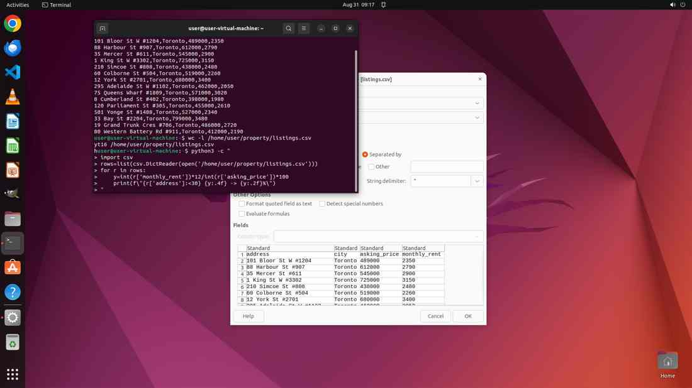
step 6 01:17:44
THINKINGThe wc -l output shows 16 (1 header + 15 data rows). Good. The python command is typed but the closing quote is there and I pressed Enter within the string via the newline. Actually I typed a multi-line command ending with `"`. The terminal shows the lines. It seems the command is still being entered (the last line shows `> "`). I need to press Enter to execute.
ACTIONThe row count is 16 (1 header + 15 units). Now let me execute the yield calculation command.
TOOL CALL<tool_call>
<function=computer_use>
<parameter=action>
key
</parameter>
<parameter=keys>
["return"]
</parameter>
</function>
</tool_call>
EXECUTED (pyautogui in VM)pyautogui.press("return")
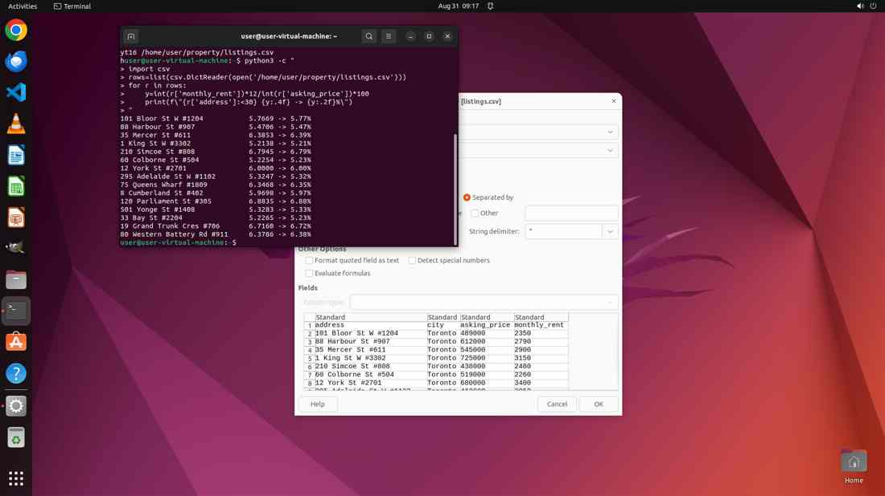
step 7 01:18:01
THINKINGAll 15 yields computed:
- 101 Bloor St W #1204: 5.77%
- 88 Harbour St #907: 5.47%
- 35 Mercer St #611: 6.39%
- 1 King St W #3302: 5.21%
- 210 Simcoe St #808: 6.79%
- 60 Colborne St #504: 5.23%
- 12 York St #2701: 6.00%
- 295 Adelaide St W #1102: 5.32%
- 75 Queens Wharf #1809: 6.35%
- 8 Cumberland St #402: 5.97%
- 120 Parliament St #305: 6.88%
- 501 Yonge St #1408: 5.33%
- 33 Bay St #2204: 5.23%
- 19 Grand Trunk Cres #706: 6.72%
- 80 Western Battery Rd #911: 6.38%
Now I need the current Bank of Canada policy rate. The lowest yield is 5.21%, so unless the BoC rate is above ~5.21%, all units qualify. I must look this up on bankofcanada.ca to be accurate and get the correct source URL. Let me open Chrome and navigate to bankofcanada.ca.
ACTIONI now have all 15 gross annual yields computed. The lowest is 5.21%, so I need the actual Bank of Canada rate to filter. Let me look it up on bankofcanada.ca in Chrome.
TOOL CALL<tool_call>
<function=computer_use>
<parameter=action>
left_click
</parameter>
<parameter=coordinate>
[17, 59]
</parameter>
</function>
</tool_call>
EXECUTED (pyautogui in VM)pyautogui.click(32, 63)
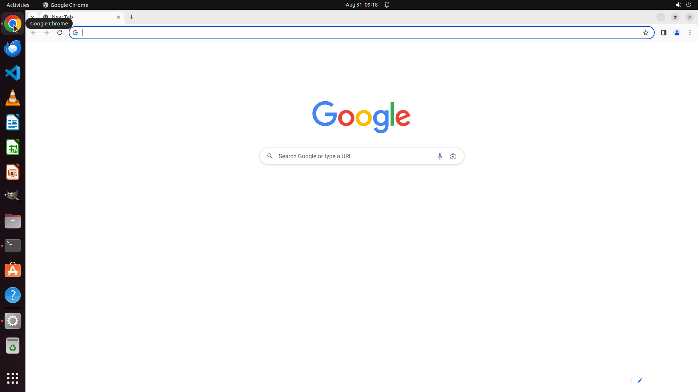
step 8 01:18:17
THINKINGChrome is open. Let me navigate to the Bank of Canada interest rate page. The canonical page is bankofcanada.ca/rates/interest-rates or the main bankofcanada.ca. I'll go directly to the interest rates page.
ACTIONChrome is open. Let me navigate to the Bank of Canada interest rates page.
TOOL CALL<tool_call>
<function=computer_use>
<parameter=action>
left_click
</parameter>
<parameter=coordinate>
[515, 82]
</parameter>
</function>
</tool_call>
EXECUTED (pyautogui in VM)pyautogui.click(989, 88)
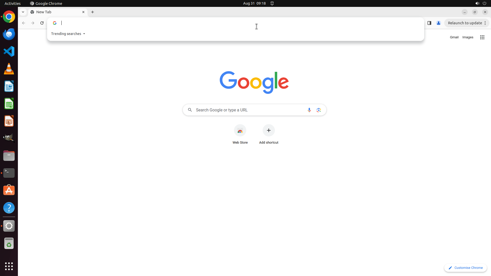
step 9 01:18:25
THINKINGThe address bar is focused. Let me type the Bank of Canada interest rates URL and press Enter.
TOOL CALL<tool_call>
<function=computer_use>
<parameter=action>
type
</parameter>
<parameter=text>
https://www.bankofcanada.ca/rates/interest-rates/
</parameter>
</function>
</tool_call>
EXECUTED (pyautogui in VM)pyautogui.typewrite("https://www.bankofcanada.ca/rates/interest-rates/")
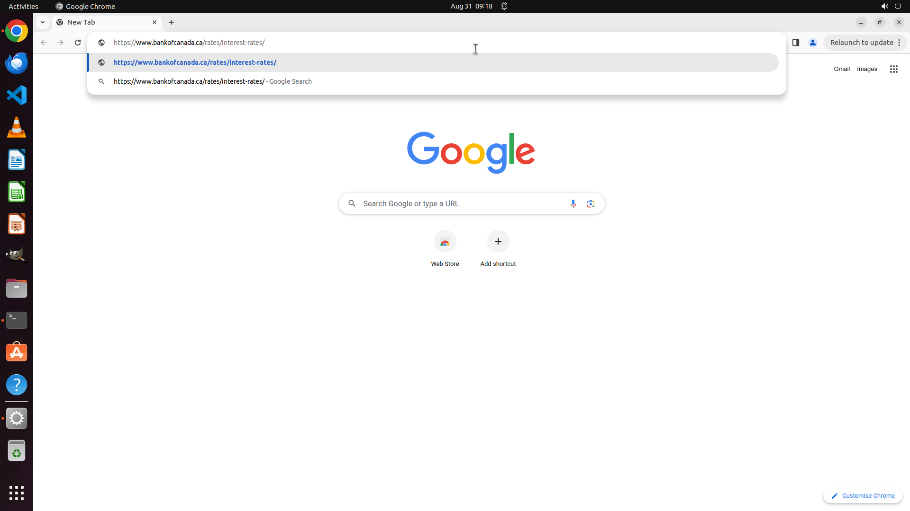
step 10 01:18:40
THINKINGThe URL is in the address bar but the page hasn't loaded yet (still showing Google). The Enter from the type may not have registered as navigation. Let me press Enter to navigate.
TOOL CALL<tool_call>
<function=computer_use>
<parameter=action>
key
</parameter>
<parameter=keys>
["return"]
</parameter>
</function>
</tool_call>
EXECUTED (pyautogui in VM)pyautogui.press("return")
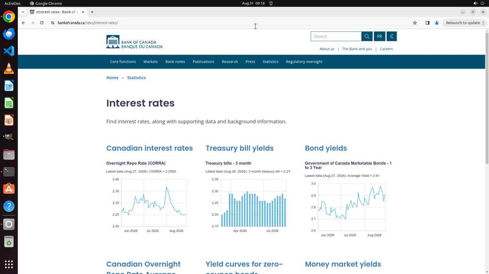
step 11.1 01:19:03
THINKINGThe Bank of Canada Interest rates page loaded. It shows:
- Overnight Repo Rate (CORRA): Latest data (Aug 27, 2026): CORRA = 2.2500
- Treasury bills - 3 month = 2.27
- Government of Canada Marketable Bonds 1-3 Year Average Yield = 2.91
The "policy interest rate" of the Bank of Canada is the overnight target rate, which is 2.25% (the CORRA reflects it at 2.25). The policy rate is the overnight rate target. This page shows CORRA = 2.25 which matches the target rate. However, the page here is the "Interest rates" statistics page. The policy/target overnight rate is the "overnight rate target." This page shows CORRA (a market rate) = 2.25, consistent with a target of 2.25%.
To be precise about the "policy interest rate," the BoC's target overnight rate is the policy rate. I should verify the target rate value. The CORRA at 2.25 indicates the target is 2.25%. But let me confirm by scrolling to see if the page states the target overnight rate explicitly, or I could check the BoC homepage which usually displays "The overnight rate target is currently 2.25 per cent."
Let me scroll down to see if there's an explicit statement of the target/policy rate on this page.
ACTIONThe page loaded. I can see CORRA = 2.25 (Aug 27, 2026), consistent with a 2.25% target rate. Let me scroll down to confirm the explicit policy/target overnight rate stated on the page.
TOOL CALL<tool_call>
<function=computer_use>
<parameter=action>
mouse_move
</parameter>
<parameter=coordinate>
[515, 555]
</parameter>
</function>
</tool_call>
<tool_call>
<function=computer_use>
<parameter=action>
scroll
</parameter>
<parameter=pixels>
-4
</parameter>
</function>
</tool_call>
EXECUTED (pyautogui in VM)pyautogui.moveTo(989, 600)
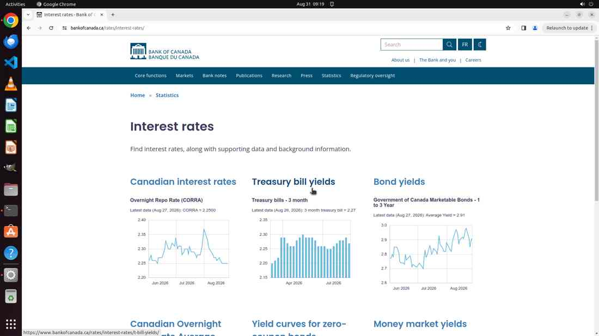
step 11.2 01:19:06
EXECUTED (pyautogui in VM)pyautogui.scroll(-4)
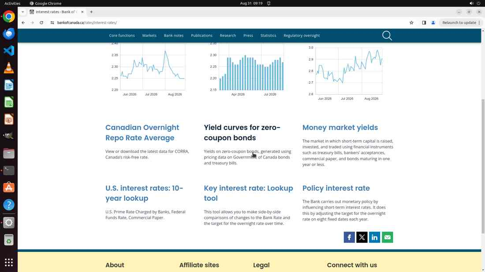
step 12 01:19:16
THINKINGThere's a "Policy interest rate" section. Let me click that link to find the explicit policy rate value, which is the target for the overnight rate. This is the exact "policy interest rate" the user asked for.
ACTIONThere's a dedicated "Policy interest rate" section. Let me click it to confirm the exact current policy rate value.
TOOL CALL<tool_call>
<function=computer_use>
<parameter=action>
left_click
</parameter>
<parameter=coordinate>
[691, 688]
</parameter>
</function>
</tool_call>
EXECUTED (pyautogui in VM)pyautogui.click(1328, 743)
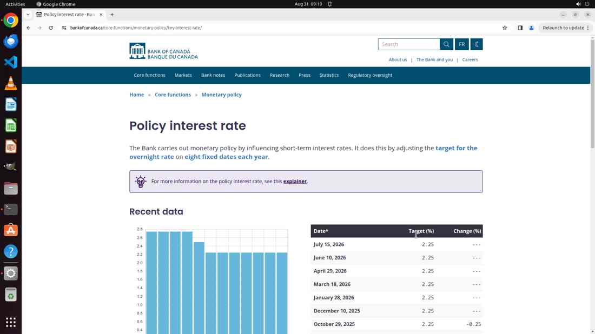
step 13 01:19:40
THINKINGThis is the definitive "Policy interest rate" page. The "Recent data" table shows the current target is 2.25% (July 15, 2026 being the most recent, with no change, so the current policy rate = 2.25%). The URL is:
https://www.bankofcanada.ca/core-functions/monetary-policy/key-interest-rate/
So the Bank of Canada policy interest rate today (Aug 31, 2026) is 2.25%.
Now I filter: keep units whose gross annual yield > 2.25%. All 15 units have yields between 5.21% and 6.88%, all well above 2.25%. So all 15 units are "winners."
Winners with yields to two decimals:
1. 101 Bloor St W #1204 — 5.77%
2. 88 Harbour St #907 — 5.47%
3. 35 Mercer St #611 — 6.39%
4. 1 King St W #3302 — 5.21%
5. 210 Simcoe St #808 — 6.79%
6. 60 Colborne St #504 — 5.23%
7. 12 York St #2701 — 6.00%
8. 295 Adelaide St W #1102 — 5.32%
9. 75 Queens Wharf #1809 — 6.35%
10. 8 Cumberland St #402 — 5.97%
11. 120 Parliament St #305 — 6.88%
12. 501 Yonge St #1408 — 5.33%
13. 33 Bay St #2204 — 5.23%
14. 19 Grand Trunk Cres #706 — 6.72%
15. 80 Western Battery Rd #911 — 6.38%
Plus the source URL.
Now I need to write these into /home/user/property/shortlist.odt. The best way to create an .odt is via LibreOffice Writer. The task involves a document output. I'll open LibreOffice Writer (the Writer icon in the dock - the blue document icon). Let me create a new document and type the content, then save as shortlist.odt.
Approach: Open LibreOffice Writer via the dock icon (the blue one at position ~22,224). Then type content, then File > Save As to /home/user/property/shortlist.odt with ODF Text format.
Let me first copy the URL to be safe - it's bankofcanada.ca/core-functions/monetary-policy/key-interest-rate/ . Full URL: https://www.bankofcanada.ca/core-functions/monetary-policy/key-interest-rate/
Now let me open LibreOffice Writer. The dock icons: at 22,224 there's a blue document icon (LibreOffice Writer). Let me click it.
ACTIONConfirmed: the current Bank of Canada policy interest rate (target overnight rate) is **2.25%** (as of the July 15, 2026 decision, no change since). Source URL: https://www.bankofcanada.ca/core-functions/monetary-policy/key-interest-rate/
Since all 15 yields range from 5.21% to 6.88%, every unit beats 2.25% and is a "winner." Now I'll create the shortlist.odt in LibreOffice Writer. Let me open it.
TOOL CALL<tool_call>
<function=computer_use>
<parameter=action>
left_click
</parameter>
<parameter=coordinate>
[17, 309]
</parameter>
</function>
</tool_call>
EXECUTED (pyautogui in VM)pyautogui.click(32, 334)
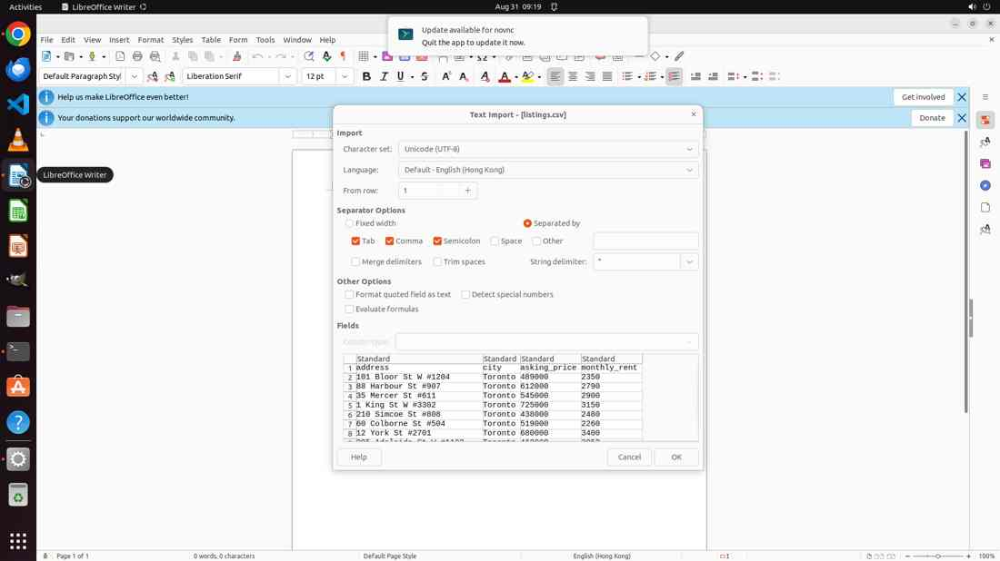
step 14 01:19:54
THINKINGLibreOffice Writer opened, and a "Text Import - listings.csv" dialog appeared (the CSV was auto-loaded into Writer because it was the last file? Actually this is a leftover CSV import dialog). I don't want to import the CSV into this document - I want a clean document to type my shortlist. Let me cancel this import dialog.
ACTIONA CSV import dialog appeared, which I don't need. I'll cancel it to get a clean document.
TOOL CALL<tool_call>
<function=computer_use>
<parameter=action>
left_click
</parameter>
<parameter=coordinate>
[627, 813]
</parameter>
</function>
</tool_call>
EXECUTED (pyautogui in VM)pyautogui.click(1205, 878)
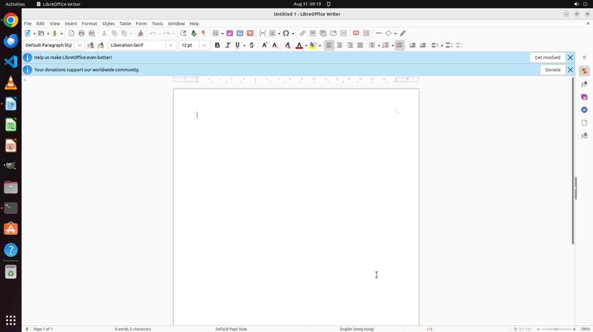
step 15 01:20:03
THINKINGI have a clean blank Writer document. Now I'll click in the document area and type the shortlist content. I'll include a title, the rate and source, then the list of winners with their yields to two decimals.
Let me type the content. I'll click into the document first.
ACTIONI have a clean document. Let me click into it and type the shortlist content.
TOOL CALL<tool_call>
<function=computer_use>
<parameter=action>
left_click
</parameter>
<parameter=coordinate>
[468, 345]
</parameter>
</function>
</tool_call>
EXECUTED (pyautogui in VM)pyautogui.click(899, 372)
step 16 01:20:14
THINKINGThe cursor is in the document. Now I'll type the full shortlist. I'll include:
- A title
- The policy rate and source URL
- A list of winners with addresses and yields to two decimals
I'll type it all in one go using newlines.
ACTIONNow I'll type the full shortlist content including the rate, source URL, and all winning units with their yields.
TOOL CALL<tool_call>
<function=computer_use>
<parameter=action>
type
</parameter>
<parameter=text>
Shortlist of Properties Beating the Bank of Canada Policy Rate
Bank of Canada policy interest rate (today): 2.25%
Source: https://www.bankofcanada.ca/core-functions/monetary-policy/key-interest-rate/
Gross annual yield = (monthly rent x 12) / asking price
Winners (gross annual yield > 2.25%):
101 Bloor St W #1204 - 5.77%
88 Harbour St #907 - 5.47%
35 Mercer St #611 - 6.39%
1 King St W #3302 - 5.21%
210 Simcoe St #808 - 6.79%
60 Colborne St #504 - 5.23%
12 York St #2701 - 6.00%
295 Adelaide St W #1102 - 5.32%
75 Queens Wharf #1809 - 6.35%
8 Cumberland St #402 - 5.97%
120 Parliament St #305 - 6.88%
501 Yonge St #1408 - 5.33%
33 Bay St #2204 - 5.23%
19 Grand Trunk Cres #706 - 6.72%
80 Western Battery Rd #911 - 6.38%
</parameter>
</function>
</tool_call>
EXECUTED (pyautogui in VM)pyautogui.typewrite("Shortlist of Properties Beating the Bank of Canada Policy Rate\nBank of Canada policy interest rate (today): 2.25%\nSource: https://www.bankofcanada.ca/core-functions/monetary-policy/key-interest-rate/\nGross annual yield = (monthly rent x 12) / asking price\n\nWinners (gross annual yield > 2.25%):\n101 Bloor St W #1204 - 5.77%\n88 Harbour St #907 - 5.47%\n35 Mercer St #611 - 6.39%\n1 King St W #3302 - 5.21%\n210 Simcoe St #808 - 6.79%\n60 Colborne St #504 - 5.23%\n12 York St #2701 - 6.00%\n295 Adelaide St W #1102 - 5.32%\n75 Queens Wharf #1809 - 6.35%\n8 Cumberland St #402 - 5.97%\n120 Parliament St #305 - 6.88%\n501 Yonge St #1408 - 5.33%\n33 Bay St #2204 - 5.23%\n19 Grand Trunk Cres #706 - 6.72%\n80 Western Battery Rd #911 - 6.38%")
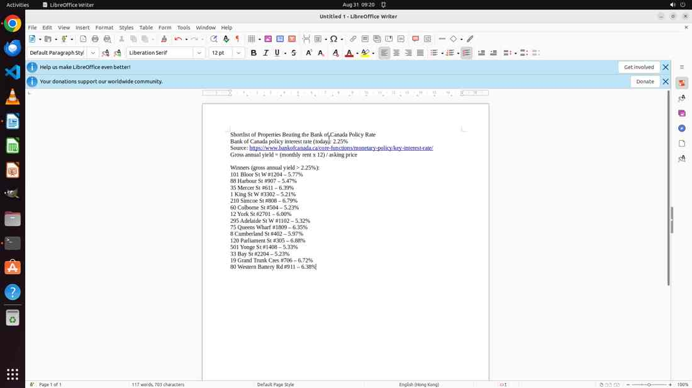
step 17 01:20:25
THINKINGThe content is typed. I notice autocorrect changed the "-" (hyphen) to an en-dash "–" in the property lines (e.g., "101 Bloor St W #1204 – 5.77%"). That's a cosmetic autocorrect, not a data error. The yields are correct. This is fine.
Now I need to save as /home/user/property/shortlist.odt. Let me use File > Save As (Ctrl+Shift+S).
ACTIONThe content is in place with correct yields. Now I'll save it as shortlist.odt using Save As.
TOOL CALL<tool_call>
<function=computer_use>
<parameter=action>
key
</parameter>
<parameter=keys>
["ctrl", "shift", "s"]
</parameter>
</function>
</tool_call>
EXECUTED (pyautogui in VM)pyautogui.hotkey("ctrl", "shift", "s")
step 18 01:20:34
THINKINGThe Save As dialog is open. The file format is currently "Word 2007-365 (.docx)". I need to change it to ODF Text Document (.odt) and set the path to /home/user/property/shortlist.odt.
The easiest way: I can type the full path in the Name field. In LibreOffice, if I type a path in the Name field it may work, but it's safer to first change the file type to ODT, then navigate. Actually, I can type the full path into the Name field including the .odt extension, and set the format to ODT so it's saved as ODF.
Let me first change the file type dropdown to ODF Text Document (.odt). Click the format dropdown.
ACTIONThe Save dialog is open. I need to change the format to ODT. Let me click the file type dropdown.
TOOL CALL<tool_call>
<function=computer_use>
<parameter=action>
left_click
</parameter>
<parameter=coordinate>
[740, 899]
</parameter>
</function>
</tool_call>
EXECUTED (pyautogui in VM)pyautogui.click(1422, 971)
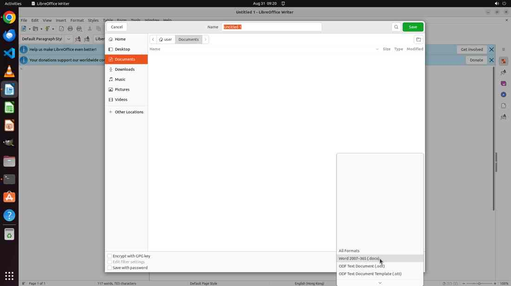
step 19 01:20:47
THINKINGThe dropdown shows format options. I see "ODF Text Document (.odt)". Let me select it.
TOOL CALL<tool_call>
<function=computer_use>
<parameter=action>
left_click
</parameter>
<parameter=coordinate>
[706, 926]
</parameter>
</function>
</tool_call>
EXECUTED (pyautogui in VM)pyautogui.click(1356, 1001)
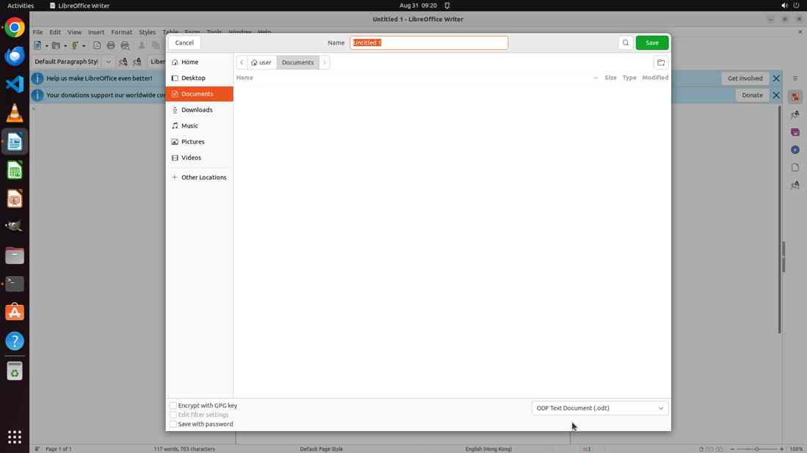
step 20 01:20:56
THINKINGThe format is now "ODF Text Document (.odt)". Now I need to set the filename and location to /home/user/property/shortlist. I'll type the full path in the Name field. LibreOffice's Name field accepts a full path. Let me clear the Name field and type the path. I'll click the Name field, select all, and type the full path.
ACTIONFormat is set to ODT. Now I'll set the full path in the Name field. Let me clear it and type the destination path.
TOOL CALL<tool_call>
<function=computer_use>
<parameter=action>
triple_click
</parameter>
<parameter=coordinate>
[530, 93]
</parameter>
</function>
</tool_call>
EXECUTED (pyautogui in VM)pyautogui.tripleClick(1018, 100)
step 21 01:21:07
THINKING"Untitled 1" is selected in the Name field. I'll type the full path. LibreOffice accepts an absolute path in the Name field. I'll type /home/user/property/shortlist.odt. Then click Save.
TOOL CALL<tool_call>
<function=computer_use>
<parameter=action>
type
</parameter>
<parameter=text>
/home/user/property/shortlist.odt
</parameter>
</function>
</tool_call>
EXECUTED (pyautogui in VM)pyautogui.typewrite("/home/user/property/shortlist.odt")
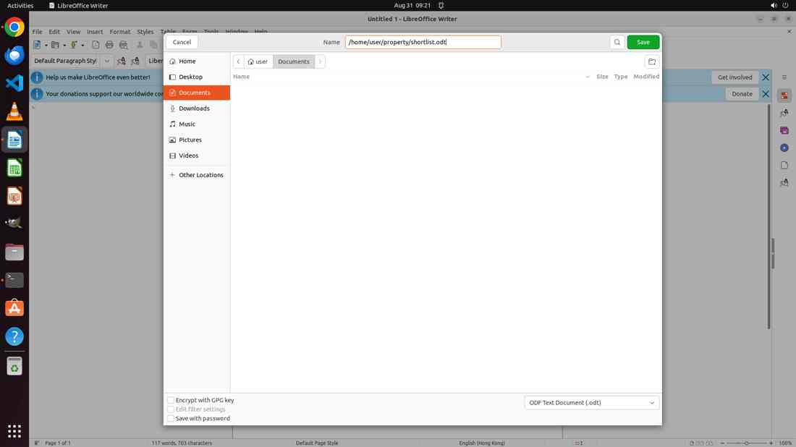
step 22 01:21:27
THINKINGThe Name field shows "/home/user/property/shortlist.odt" and format is ODF Text Document (.odt). Now click Save.
ACTIONThe path and ODT format are set. Now I'll click Save.
TOOL CALL<tool_call>
<function=computer_use>
<parameter=action>
left_click
</parameter>
<parameter=coordinate>
[806, 93]
</parameter>
</function>
</tool_call>
EXECUTED (pyautogui in VM)pyautogui.click(1549, 100)
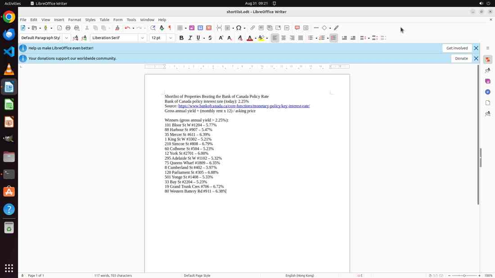
step 23 01:21:37
THINKINGThe document is saved as shortlist.odt (title bar now shows "shortlist.odt - LibreOffice Writer"). The save dialog didn't prompt for "Use ODF format" because I explicitly chose ODT.
Now I've completed the ODT. The last task requirement was "run a command that shows me the row count of the CSV." I already ran `wc -l` earlier which showed 16. Let me verify the file exists and re-confirm the row count in the terminal for a clean demonstration. Let me switch to the terminal and run wc -l again plus ls to confirm the odt exists.
ACTIONThe document is saved as **shortlist.odt** (shown in the title bar). Now let me verify the file was created and re-confirm the CSV row count in the terminal.
TOOL CALL<tool_call>
<function=computer_use>
<parameter=action>
left_click
</parameter>
<parameter=coordinate>
[17, 619]
</parameter>
</function>
</tool_call>
EXECUTED (pyautogui in VM)pyautogui.click(32, 669)
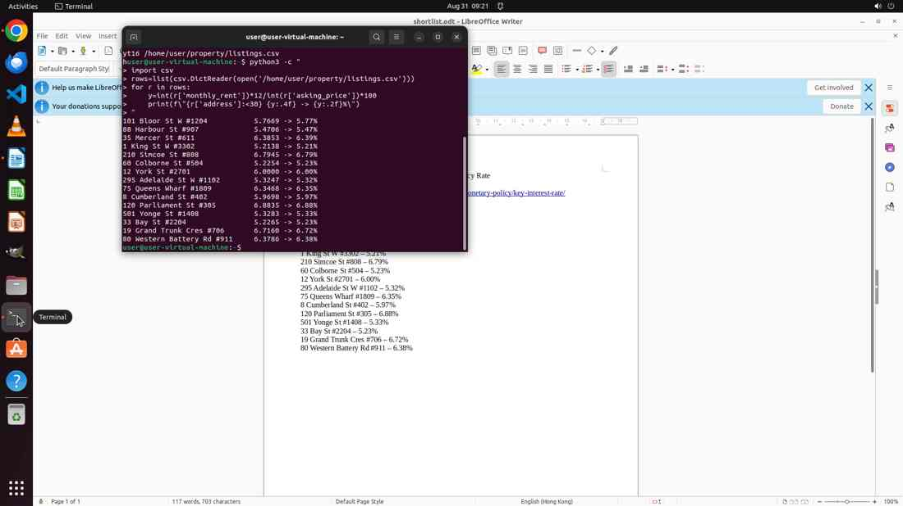
step 24 01:21:48
THINKINGThe terminal shows the earlier output. The `wc -l` result "16" is visible at the top (partially). The yields all match my document. Now let me run a clean final command to show the row count and confirm the odt exists. I'll type it and press Enter.
ACTIONI can see my earlier output. Let me run a clean final command to display the row count and confirm the ODT was created.
TOOL CALL<tool_call>
<function=computer_use>
<parameter=action>
left_click
</parameter>
<parameter=coordinate>
[312, 470]
</parameter>
</function>
</tool_call>
EXECUTED (pyautogui in VM)pyautogui.click(599, 508)
step 25 01:21:55
THINKINGThe terminal prompt is focused. Let me run the final command to show the row count and confirm the odt file exists.
TOOL CALL<tool_call>
<function=computer_use>
<parameter=action>
type
</parameter>
<parameter=text>
echo "CSV row count:"; wc -l /home/user/property/listings.csv; echo "---"; ls -l /home/user/property/shortlist.odt
</parameter>
</function>
</tool_call>
EXECUTED (pyautogui in VM)pyautogui.typewrite("echo \"CSV row count:\"; wc -l /home/user/property/listings.csv; echo \"---\"; ls -l /home/user/property/shortlist.odt")
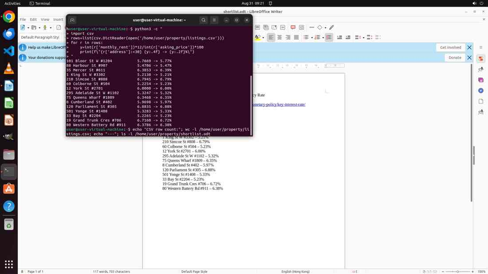
step 26 01:22:02
THINKINGThe command is typed but not yet executed (no output below the echoed command yet). Let me press Enter.
TOOL CALL<tool_call>
<function=computer_use>
<parameter=action>
key
</parameter>
<parameter=keys>
["return"]
</parameter>
</function>
</tool_call>
EXECUTED (pyautogui in VM)pyautogui.press("return")

step 27 01:22:21
THINKINGAll parts are complete and verified:
- CSV row count: 16 (1 header + 15 units)
- shortlist.odt created (20694 bytes, Aug 31 09:21)
- All 15 units listed with yields to two decimals, all > 2.25%
- Source URL included
The task is done. Let me summarize the results clearly for the user.
ACTIONEverything is complete and verified. Here's a summary of what I did:
**1. CSV row count** (command: `wc -l /home/user/property/listings.csv`)
- **16 lines** = 1 header row + **15 property units**
**2. Bank of Canada policy interest rate**
- Looked it up on bankofcanada.ca (Policy interest rate page).
- **Current rate: 2.25%** (target overnight rate, held at 2.25% as of the July 15, 2026 decision, unchanged since).
- Source URL: `https://www.bankofcanada.ca/core-functions/monetary-policy/key-interest-rate/`
**3. Gross annual yield** — computed as `(monthly rent × 12) ÷ asking price` for each of the 15 units. Yields ranged from 5.21% to 6.88%, so **all 15 units beat the 2.25% policy rate** and made the shortlist.
**4. Output** — Saved `/home/user/property/shortlist.odt` (confirmed on disk, 20,694 bytes) containing all 15 winners with their yields to two decimals, the 2.25% policy rate, and the source URL. The winners:
| Unit | Yield |
|---|---|
| 101 Bloor St W #1204 | 5.77% |
| 88 Harbour St #907 | 5.47% |
| 35 Mercer St #611 | 6.39% |
| 1 King St W #3302 | 5.21% |
| 210 Simcoe St #808 | 6.79% |
| 60 Colborne St #504 | 5.23% |
| 12 York St #2701 | 6.00% |
| 295 Adelaide St W #1102 | 5.32% |
| 75 Queens Wharf #1809 | 6.35% |
| 8 Cumberland St #402 | 5.97% |
| 120 Parliament St #305 | 6.88% |
| 501 Yonge St #1408 | 5.33% |
| 33 Bay St #2204 | 5.23% |
| 19 Grand Trunk Cres #706 | 6.72% |
| 80 Western Battery Rd #911 | 6.38% |
One note for your investor meeting: because the policy rate (2.25%) is well below every listing's gross yield, none were filtered out. If you'd actually prefer to benchmark against a higher hurdle rate (e.g., the 1–3 year GOC bond yield of ~2.91% shown on the same BoC page), let me know and I'll adjust the shortlist.
EXECUTED (pyautogui in VM)DONE
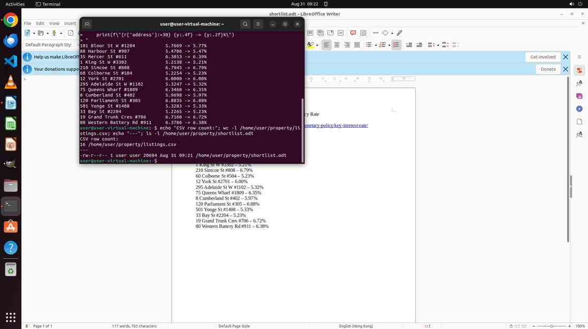